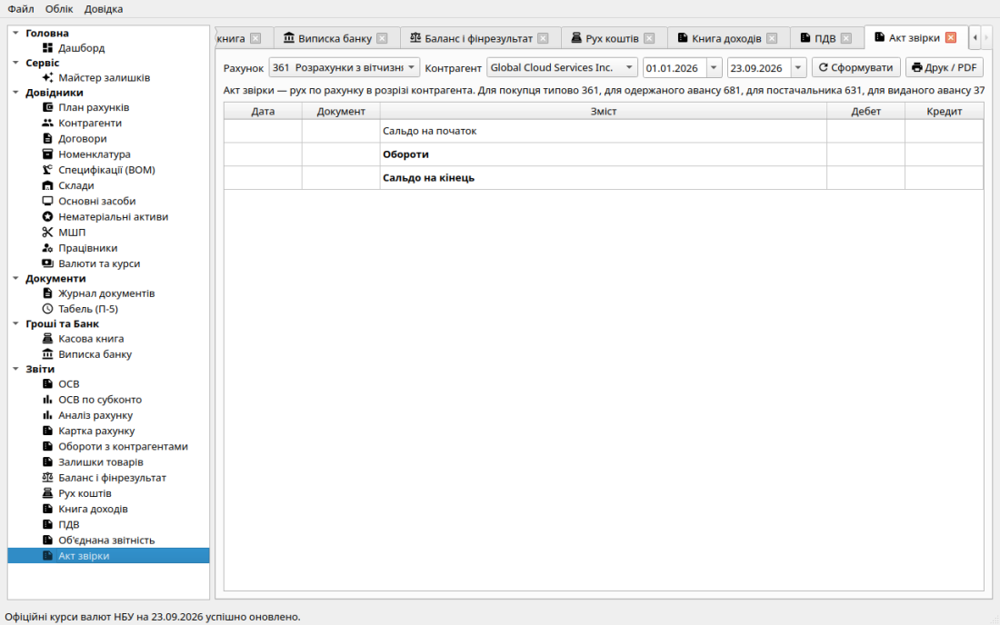

Правильний облік розрахунків із покупцями та постачальниками є критично важливим для контролю дебіторської та кредиторської заборгованості, а також для безпомилкового нарахування податкових зобов'язань і податкового кредиту з ПДВ.
В системі «Фінік» чітко розмежовані поточні розрахунки та аванси:
| Контрагент | Поточні розрахунки за відвантаження | Попередні оплати (Аванси) |
|---|---|---|
| Покупці та замовники |
Рахунок 361 («Розрахунки з вітчизняними покупцями»): • Дебет — відвантажено товар/послугу (виник борг покупця). • Кредит — покупець сплатив за раніше отриманий товар. |
Рахунок 681 («Розрахунки за авансами одержаними»): • Кредит — покупець перерахував передоплату (наш борг перед ним). • Дебет — залік авансу при відвантаженні товару. |
| Постачальники та підрядники |
Рахунок 631 («Розрахунки з вітчизняними постачальниками»): • Кредит — постачальник відвантажив товар чи надав послугу. • Дебет — оплата постачальнику за отриманий товар. |
Рахунок 371 («Розрахунки за виданими авансами»): • Дебет — ми сплатили постачальнику попередню оплату. • Кредит — залік авансу при отриманні накладної/акта. |
Вам не потрібно запускати складні ручні регламентні обробки відновлення послідовності. Рушій проведення автоматично керує заліком авансів:
Для підтвердження стану заборгованості між контрагентами використовується розділ навігації «Акт звірки»:
Система завантажує початкове сальдо на дату «з», усі проведених первинні документи за період з точними номерами й датами, а також обчислює підсумкове сальдо на дату «по».

Розділ формування Акта звірки розрахунків: детальна таблиця документів із дебетовими й кредитовими оборотами та кнопкою друку офіційної форми.